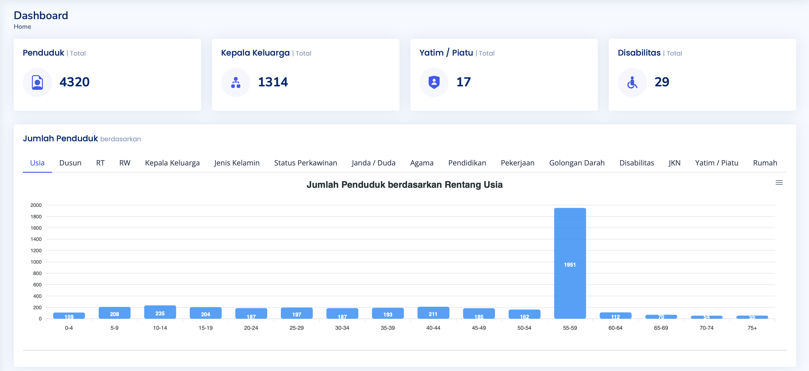
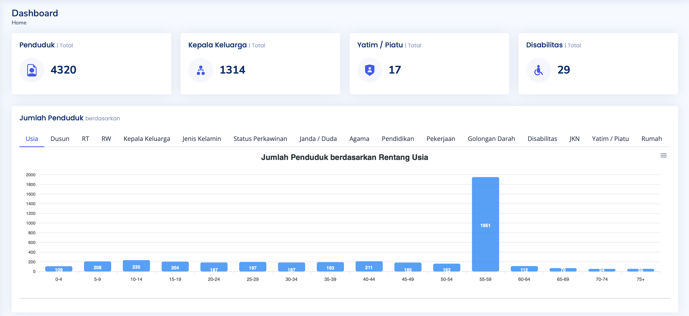

SINOPPAL
Sistem Informasi Penduduk Desa Pangkalan
 

# Aloshop Pharmacy Partner Integration ## Project Overview As Principal Architect (Fullstack) at Alodokter in 2024, I led the strategic integration of Watsons as a new pharmacy partner for the Aloshop platform. This integration significantly expanded our product catalog and created new transaction opportunities for the business. ## Key Responsibilities & Achievements ### Architecture & Integration - Designed and implemented the complete integration architecture between Aloshop and Watsons' systems - Conducted comprehensive API integration assessment to identify technical requirements and potential challenges - Created resilient infrastructure specifically optimized for third-party pharmacy integrations - Established integration patterns that could be reused for future pharmacy partner onboarding ### Technical Leadership - Provided expert guidance to development teams throughout the integration process - Established best practices for external API communication, data synchronization, and error handling - Mentored team members on microservice architecture principles in healthcare tech contexts - Led code reviews ensuring quality, security, and performance standards were maintained ### Performance Engineering - Conducted extensive benchmark testing for stock and price synchronization processes - Implemented performance optimizations resulting in efficient resource utilization - Designed load testing scenarios to verify system stability under various transaction volumes - Created monitoring dashboards to track integration health metrics ### DevOps & Deployment - Led the setup of new microservices from development through to production - Configured and optimized Google Kubernetes Engine (GKE) environments - Implemented CI/CD pipelines for automated testing and deployment - Ensured high availability and fault tolerance for all integration components ## Technical Implementation ### Architecture - Developed lightweight microservices using Ruby with Sinatra Framework - Implemented document-based data storage with MongoDB for flexible schema adaptation - Utilized Redis for caching frequently accessed product and inventory data - Built asynchronous job processing through Sidekiq for catalog synchronization ### Infrastructure - Containerized all services using Docker for consistency across environments - Deployed and orchestrated containers in Google Kubernetes Engine (GKE) - Leveraged Google Cloud Platform (GCP) for scalable and reliable infrastructure - Implemented auto-scaling policies based on transaction and synchronization volumes ### Integration Challenges Solved - Developed robust error handling for intermittent connectivity issues - Created data transformation layer to normalize pharmacy catalog formats - Implemented rate limiting and circuit breakers to protect both systems - Designed idempotent operations to ensure data consistency ## Business Impact - Expanded product catalog by over 10,000 items through Watsons integration - Improved inventory accuracy with real-time stock synchronization - Reduced integration time for future pharmacy partners by 60% through reusable components - Enhanced customer satisfaction by providing wider product selection and improved availability information This project demonstrates expertise in API integration, microservice architecture, performance optimization, and healthcare technology infrastructure.
Key Features
- Centralized Database Management Integrated storage of citizen demographics, family relationships.
- Census & Statistical Reporting Automated population analytics and demographic trend visualization.
- User Management Role-based access for different government personnel
Technical Implementation
- Backend PHP with MySQL database.
- Frontend Responsive design using Bootstrap and JavaScript
- Security Implemented encryption for sensitive personal data
- Performance Optimized for handling large datasets with thousands of records
Results & Impact
- Improved data accuracy by eliminating redundant entries.
- Enabled evidence-based policy planning through accurate population statistics.
- Enhanced service delivery for citizens through streamlined processes
- Provided real-time population analytics for government planning
Technical Challenges Overcome
- Data migration from legacy paper-based systems.